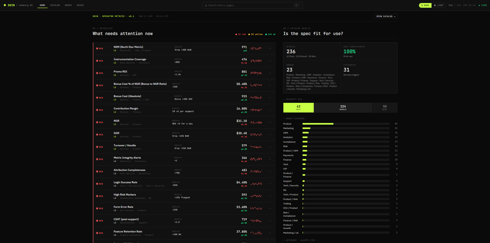
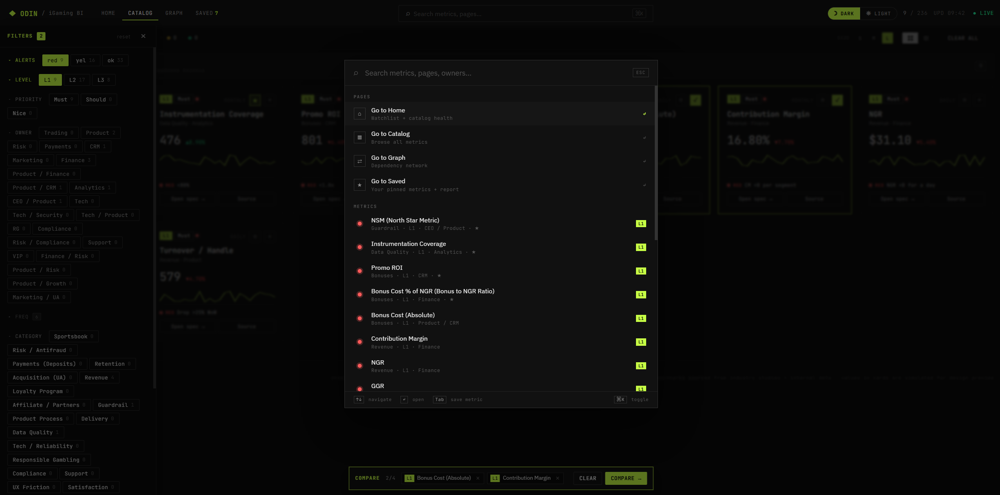
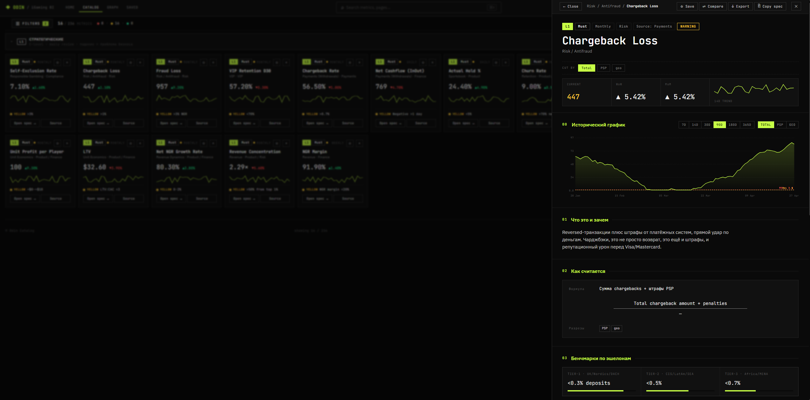
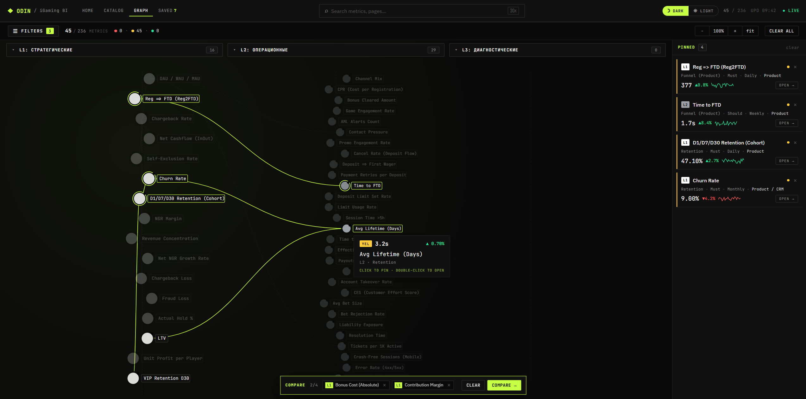
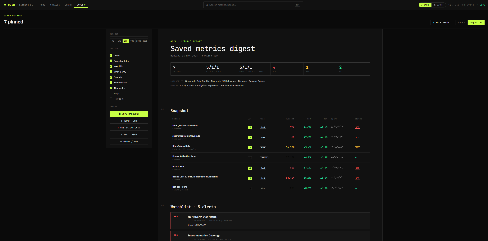

ODIN — BI,
который не
отдаёт ваши данные.
Локальный инструмент для аналитика iGaming-оператора. 236 метрик с готовыми спеками, граф зависимостей, отчёты в один клик. Всё на машине пользователя — никакого cloud.
Знание о метриках
не должно жить в головах.
Каждая метрика — это не только число. Это спецификация (что считаем, как, где ловушки), история (что мы уже узнали), связи с другими метриками. В обычной компании всё это разбросано: спеки в Confluence, данные в Tableau, инсайты в Slack. Через год — никто не помнит почему GGR упал тогда в Q3.
Три проблемы аналитика
в регулируемой индустрии.
Контекст метрики умирает
Аналитик уволился — никто не помнит почему «Bonus Cost % of NGR» считается так, а не иначе. Спека была в его голове.
Cloud-BI запрещён compliance
iGaming, финтех, healthcare. Никто не одобрит Tableau+ChatGPT plugin: данные о когортах не должны уходить в облако.
Аналитики не инженеры
Решения «работайте с MD-файлами через git CLI» убивают usage с первого дня. Нужен normal UI как в Notion.
Аналитик открывает ODIN. На главном экране — Watchlist: метрики, требующие внимания прямо сейчас. Сортировка по severity, у каждой — спарклайн, текущее значение, какой порог нарушен.
Справа — Catalog Health: 236 метрик, 100% покрыты спеками, разбивка по приоритетам и owner'ам.

Фильтры одним кликом: Alerts: Yellow + Level: L1 (стратегические). Из 236 метрик — 16. Среди них Chargeback Loss, Fraud Loss, VIP Retention, Net Cashflow.
Те же фильтры работают в Graph view, в Saved view — единый язык фильтрации по всему продукту.

В drawer'е — полная спецификация метрики: что это, как считается, формула, бенчмарки по эшелонам (UK/Nordics vs CIS/LatAm vs Africa/MENA), исторический график за 90 дней.
Видно: после месяца на минимуме — резкий рост к 447. WoW и MoM по +5.42%. Категория Risk / Antifraud — порог Visa/Mastercard под угрозой.

Переключаюсь в Graph view — граф зависимостей метрик по уровням (L1 → L2 → L3). Запиниваю Chargeback Rate, Chargeback Loss и соседей: Bonus Activation Rate, Bet per Round, Engagement Quality Score.
Подсветка пути остаётся постоянно. Side-panel справа — все запиненные карточки с current value, WoW, спарклайнами. Side-by-side investigation.

Запиненные метрики уезжают в Saved view. Конструктор дайджеста: какие секции включить (snapshot table, watchlist, формулы, бенчмарки, ловушки, как чинить).
Экспорт: Markdown в Slack/Telegram, PDF для C-level, CSV исторических значений для дальнейшего анализа, JSON spec для интеграции.

Завтра — Conversational Analytics
с локальной LLM.
Та же история — но вы не кликаете. Вы спрашиваете живым языком, как у коллеги. Хугин читает Мунина (память: спеки + история инцидентов) и текущие данные, отвечает с контекстом.
Никаких данных о когортах в облаке. Модель — на ноутбуке аналитика или через MCP-bridge с user-supplied API key.
Ваши данные — на вашей машине.
Ваша модель — какую поставите.
Ваша команда — через ваш git.
Для кого
- iGaming-операторы (compliance-paranoid)
- Финтех data teams
- Healthcare аналитика
- Любые регулируемые индустрии
Что отличает от Tableau / Hex / Looker
- Локально, без cloud-зависимости
- Семантический слой как ядро (не дашборды)
- LLM bring-your-own (Ollama / Claude)
- WYSIWYG-редактор для не-инженеров